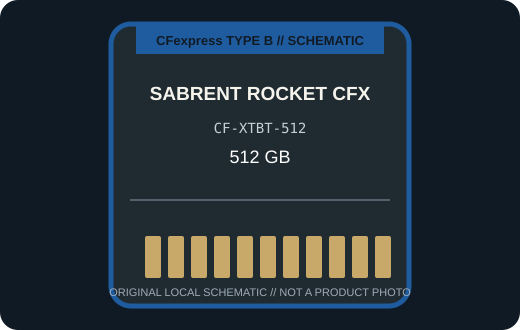

[ REMOVABLE MEDIA // PRODUCT RECORD ]
Sabrent Rocket CFX CFexpress Type B 512 GB (CF-XTBT-512)
Sabrent’s 512 GB Rocket CFX card is the CF-XTBT-512 PCIe Gen 3 Type B variant; do not conflate it with Sabrent’s differently numbered Rocket CFX products. This entry describes the removable card only; the camera or reader is separate.

MEDIA ONLY: Sabrent Rocket CFX CFexpress Type B 512 GB (CF-XTBT-512). Capacity, interface generation, and compatibility refer to this model and not other cards in the same family.
Capacity, interface and compatibility
| Manufacturer model | CF-XTBT-512; CFexpress Type B, Rocket CFX |
|---|---|
| Nominal capacity | 512 GB. Usable space varies with formatting and system-reserved capacity. |
| Interface | PCIe 3.0 x2 Type B card. |
| Performance | Sabrent specifies up to 1,700 MB/s read, up to 1,500 MB/s write, up to 1,600 MB/s sustained read, and up to 400 MB/s sustained write for CF-XTBT-512. |
| Host compatibility | A CFexpress Type B camera or reader. The model is not a CFast 2.0 card, and an XQD body requires explicit CFexpress firmware support; confirm the camera’s card list and capacity limit. |
| Write protection | No physical card-level write-protect switch is specified for this model; use host controls and verified backups. |
| Model-specific note | The CF-XTBT-512 SKU identifies the 512 GB Rocket CFX card. Sabrent also sells separately numbered CFexpress products; verify the full SKU before applying speed or host-compatibility claims. |
Handling and preservation
No finite shelf-life or archival-life guarantee is claimed here. Keep the card clean, dry, labeled, and in its protective case; avoid touching contacts and never remove it during a write. After use, verify files and maintain multiple checksummed copies on independent media. Before a migration or recovery, record the exact card SKU, camera/reader, firmware, filesystem, and host.
Sources and standards
- Sabrent — Rocket CFX CFexpress Type B CF-XTBT-512Manufacturer product information for the named series or exact model; confirm SKU and host notes.
- CompactFlash Association — CFexpress card typesStandards reference for card form factors; not a substitute for device-specific compatibility.
- Library of Congress — Digital preservation formatsIndependent preservation planning reference for removable digital media.
Manufacturer data apply to the specific product generation shown. Standards define the format family; the camera and reader manuals govern host compatibility.